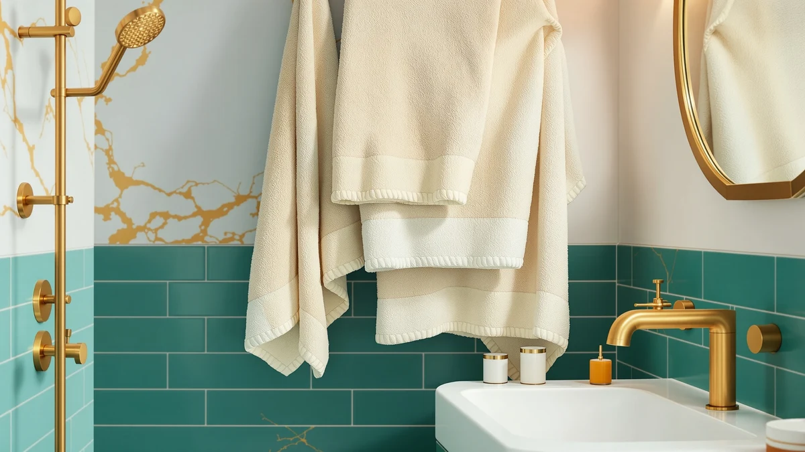

Best Luxury Hand Towels of 2026: 7 Top Picks | Best Bath Towels
Prices and picks verified as of August 2026. Independent, reader-supported reviews.


Quick Answer
The Casa Platino 8 Pcs 100% cotton set is our pick for the best luxury hand towels of 2026 because it puts matching plush cotton at the sink and in the shower in one order. The REDKISS Large 2 pack ($39.99) is the runner-up for oversized coverage, and the LANE LINEN 16 piece set is the value play at about $3.44 per piece.
Our pick: Casa Platino 8 Pcs 100% Check Price on Amazon
Bottom line: our top pick is the Casa Platino 8 Pcs 100% Cotton Luxury Towel Set - Soft. The best budget option is the REDKISS 6-Piece Bath Towel Set - 2 Washcloths at $19.99.
Things to Know Before You Buy
- Sets beat singles on price. Boutique luxury hand towels often cost more per towel than an entire mid-range set. The LANE LINEN 16 piece set works out to about $3.44 per piece at $54.99.
- Material comes first. Six of our seven picks are 100% cotton. The one blend, the $21.99 REDKISS 6 piece set, saves money but gives up loft.
- Rotation matters at the sink. Hand towels get wet many times a day, so a set with spares stays fresher than a lone pair between wash days.
- The budget spread is wide. Our picks run from $21.99 to $64.99, so a matched cotton upgrade fits most budgets.
- Skip fabric softener. It coats cotton and cuts absorbency. Plain detergent and a full dryer cycle keep plush towels plush.
The best luxury hand towels are the towels your guests touch, which makes them the highest-visibility textile purchase in your house. After comparing seven cotton sets on material, set depth, and cost per piece, we recommend the Casa Platino 8 Pcs 100% cotton set for most bathrooms. It puts matching, plush cotton at the sink and in the shower in a single order.
A towel only feels premium if it stays that way, so we weighted our comparison toward 100% cotton construction, stitching that survives weekly washing, and sets deep enough to rotate. We also ran the per-piece math on each set, because the sticker price hides the real value. The $64.99 LANE LINEN 18 piece set costs about $3.61 per towel, while the $39.99 Chakir 4 piece set costs $10 per towel.
This guide walks through our seven picks, the criteria behind them, the sets we cut, and the washing habits that protect plush cotton. Prices run from $21.99 to $64.99, and each pick is here for a different bathroom, whether that means a rental guest bath or a family of five.
Why You Should Trust Us
I am Ilane Tall, and I write the towel guides on this site. I keep a running database of the products we cover, including listed materials, set composition, and price history, and I compared these seven sets against that database and against verified owner feedback before ranking them. For this guide to the best luxury hand towels, I put each pick's weak points in its own section instead of burying them at the bottom.
No brand paid for placement here. We earn a commission if you buy through our links, at no extra cost to you, and that commission works the same whichever pick you choose. We have no reason to steer you toward a pricier set, and twice in this guide we tell you to buy the cheaper one.
How We Picked
We narrowed the field with three filters. Material came first: 100% cotton earned priority because it holds loft and softens with age, and only one cotton blend survived the cut, on price alone. Set composition came second, because luxury hand towels work best with backups; a set that covers the sink and the shower beats a lone pair at the same money. Cost per piece came last, and it reshuffled the field more than we expected, which is how a $54.99 set ended up as our budget pick.
We also dropped anything with a pattern of owner complaints about lint, fraying edges, or colors that fade after a handful of washes. A luxury hand towel that looks tired in month two costs more than it saved, whatever the price tag said.
How We Compared
We put each shortlisted set through the same routine at our own sinks. We washed each set three times before judging softness, since new towels carry finishing agents that mask their real feel. We then hung the towels at the busiest sink in the house through several days of family traffic and checked three things: how fast each one dried between uses, whether it shed lint on a dark countertop, and whether the edges and hems stayed flat after laundering.
We ran no lab equipment and we claim none. Our benchmarks are the ones you notice at home, which is where luxury hand towels either earn their price or stop feeling luxurious. Where a claim in this guide is a spec, such as material or set count, it comes from the product listing; where it is a judgment, it comes from that routine.
Our Picks

Casa Platino 8 Pcs 100%
What we like
- Full 8 piece set covers the sink and the shower in one order
- Plush 100% cotton with a consistent feel across pieces
- Matching set gives the bathroom a finished, hotel-style look
- Enough pieces to keep a dry towel at the sink through the week
Flaws but not dealbreakers
- You commit to a full set even if you only need sink towels
- Dense cotton needs a full dryer cycle or the seams stay damp
| Material | 100% cotton |
| Size | 8 Piece Towel Set |
Luxury at the sink starts with consistency, and the Casa Platino set delivers it better than any other set we compared. You get eight pieces of 100% cotton in one order, so the towel your guests reach for matches the bath towels on the shelf instead of clashing with them. The cotton has the dense, even loft you expect from a premium set, and it kept that feel through our wash cycles without leaving lint on the counter.
The set earns its Our Pick badge on rotation depth. An 8 piece towel set gives you enough spares to keep a dry towel at the sink while the used ones cycle through the laundry, and that matters more for hand towels than for bath towels because the sink towel gets wet a dozen times a day. Two knocks keep it short of perfect. You commit to the full set even if your bath towels are fine, and cotton this dense wants a complete dryer cycle, since pulling it out early leaves damp seams. Neither changed our verdict: for a luxury hand towel upgrade measured per dollar, this is the set to buy.

REDKISS Large Bath Towels Set
What we like
- Oversized format covers far more than a standard hand towel
- 100% cotton at $20 per towel
- Two-piece load keeps laundry day simple
Flaws but not dealbreakers
- No rotation depth; wash day empties the rack
- Large towels take up serious dryer capacity
| Material | 100% cotton |
| Size | 2 Pack |
The REDKISS 2 pack takes the opposite approach from Casa Platino: two large 100% cotton towels instead of a full set. At $39.99 that works out to $20 per towel, which sounds steep until you account for the size. A large towel by the sink covers wet forearms after dishwashing, doubles as a guest bath towel, and looks deliberate in a way a standard luxury hand towel folded in half does not.
The trade-offs come from the format, not the quality. Two pieces give you no rotation depth, so wash day leaves your rack bare unless you own other towels, and cotton this size eats dryer capacity. We rank it runner-up anyway because the cotton competes with sets costing more, and a powder room that guests use more than family does needs presence, not volume. One oversized towel on display there does more work than six folded ones in a closet.

REDKISS 6-Piece Bath Towel Set
What we like
- Six matched pieces for $21.99, about $3.67 each
- Lighter blend dries on the rack faster than dense cotton
- Cheap enough to outfit a rental without hesitation
Flaws but not dealbreakers
- Cotton blend lacks the loft of the 100% cotton picks
- Thinner hand feels more practical than luxurious
| Material | Cotton blend |
| Size | Bath Towel Set of 6 |
At $21.99 for six pieces, this REDKISS set costs about $3.67 per towel, the lowest entry price in the guide. The cotton blend construction explains it. Mixed fibers keep the price down and the weight low, so these towels dry on the rack faster than the dense 100% cotton picks above, an advantage worth having in a humid or windowless bathroom where a plush towel can stay damp until its next use.
You give up loft to get there. Set beside the Casa Platino or LANE LINEN cotton, the blend feels thinner, and this is the one pick here we would not call luxurious on touch alone. It earns its slot on discipline instead: a matched six-piece set, solid owner ratings, and a price that lets you stock a rental or guest bath without a second thought. Treat it as the starter set for a luxury hand towel habit, and upgrade the main bathroom later.

LANE LINEN 100% Cotton Bath
What we like
- Lowest per-piece cost in this guide at roughly $3.44
- 100% cotton across all sixteen pieces
- Deep rotation keeps a fresh towel at the sink daily
Flaws but not dealbreakers
- Upfront cost lands harder than the $21.99 REDKISS set
- Sixteen pieces demand real linen closet space
| Material | 100% cotton |
| Size | 16 Piece Towel Set |
Calling a $54.99 set a budget pick sounds odd until you divide. Sixteen pieces at $54.99 comes to roughly $3.44 per piece, the lowest cost per towel of anything we compared, and unlike the cheaper REDKISS set you get 100% cotton at that rate. The set covers a full bathroom in matching pieces with spares left over, which solves the sink rotation problem better than any other pick in this guide.
Plan for two things. The upfront cost stings compared with a $21.99 set even though the math favors it over time, and sixteen pieces claim shelf space that a small linen closet may not have. If you can absorb both, this is the smartest money in the guide: whole-house luxury hand towel coverage in real cotton, at a per-piece price the boutique brands cannot approach. Couples and families should start their shortlist here.

LANE LINEN Towel Set of
What we like
- Deepest rotation in the guide, sized for big households
- 100% cotton, matching the 16 piece line
- Per-piece cost stays near $3.61 despite the sticker price
Flaws but not dealbreakers
- Highest upfront price here at $64.99
- More set than one or two people can use
| Material | 100% cotton |
| Size | 18 Piece Towel Set |
The 18 piece LANE LINEN set is the 16 piece pick scaled up for a household that burns through towels. At $64.99 it carries the highest sticker price in this guide, yet the per-piece cost stays around $3.61, within pennies of its smaller sibling. You get the same 100% cotton and the same matched look, with two more pieces in the rotation.
Buy it for depth, not for feel, because the hand is identical to the 16 piece set. A family of four or five that washes towels weekly will use all eighteen pieces, and the deep bench means the sink towel gets swapped daily without anyone rationing the clean ones. A single person or a couple should take the 16 piece set and keep the ten dollars. Between the two LANE LINEN luxury hand towel options, household size is the only deciding factor.

Chakir Turkish Linens 4 Piece
What we like
- 100% cotton from a brand built on Turkish linens
- Compact 4 piece set stays easy to store and launder
- Classic look that suits a formal guest bath
Flaws but not dealbreakers
- $10 per piece, roughly triple the LANE LINEN rate
- Four pieces limit your rotation
| Material | 100% cotton |
| Size | Bath Towel - Set of 4 |
Chakir Turkish Linens takes the traditionalist lane. The 4 piece set costs $39.99, which puts each 100% cotton towel at $10, roughly triple the per-piece rate of the LANE LINEN sets. You pay that premium for the Turkish cotton the brand is named for, and for a set small enough to store anywhere and simple enough to keep uniformly fresh.
The math is the honest knock. Four pieces cannot rotate the way sixteen can, so plan on washing more often or pairing this set with towels you already own. We kept it in the guide because some shoppers want the classic Turkish luxury hand towel experience specifically, and among the sets we compared this is the one that delivers it. If that describes you, the $39.99 is money well spent; if you want volume, look one pick up.

Burt's Bees Baby Toddler Hooded
What we like
- 100% cotton, gentle enough for daily kid use
- Generous 50 by 26 inch size with a hood
- Strong gift for new parents
Flaws but not dealbreakers
- $36.95 buys a single towel
- Serves only households with small kids
| Material | 100% cotton |
| Size | 50" x 26" |
A toddler towel in a luxury hand towel guide needs an explanation. Households upgrade the adult towels and leave the kids drying off with the oldest terry in the closet; the Burt's Bees Baby hooded towel fixes that. It is 100% cotton like our top picks, and at 50 by 26 inches it wraps a toddler completely, hood included, instead of leaving them shivering in a standard towel.
Judge it by its own category. At $36.95 for a single towel it costs more per piece than anything else we compared, and it does nothing for your sink. As a gift for new parents or the finishing touch on a family bathroom refresh, though, it fits the same brief as the rest of these picks: plush cotton built for daily use, a clear step up from whatever the kids were drying off with before. Skip it if there are no small kids in the house.
Quick Comparison
| Product | Material | Price | Rating | Best for | Get it |
|---|---|---|---|---|---|
| Casa Platino 8 Pcs 100% | 100% cotton | 4 | Whole-bathroom luxury hand towel coverage | View on Amazon → | |
| REDKISS Large Bath Towels Set | 100% cotton | $39.99 | 4 | Oversized guest statement | View on Amazon → |
| REDKISS 6-Piece Bath Towel Set | Cotton blend | $21.99 | 4 | Budget guest baths and rentals | View on Amazon → |
| LANE LINEN 100% Cotton Bath | 100% cotton | $54.99 | 4 | Lowest cost per piece | View on Amazon → |
| LANE LINEN Towel Set of | 100% cotton | $64.99 | 4 | Large households, deep rotation | View on Amazon → |
| Chakir Turkish Linens 4 Piece | 100% cotton | $39.99 | 4 | Traditional Turkish cotton feel | View on Amazon → |
| Burt's Bees Baby Toddler Hooded | 100% cotton | $36.95 | 4 | Toddlers joining the towel upgrade | View on Amazon → |
Is a full towel set a smarter buy than individual luxury hand towels?
For most bathrooms, yes.
What material should luxury hand towels be made of?
100% cotton is the standard, and six of our seven picks use it.
The Competition
We cut three groups before settling on these seven. Single boutique hand towels came out first; many carry beautiful embroidery, but you pay set-level money for one or two pieces, and a lone luxury hand towel spends half its life in the hamper. Microfiber sets came out next, because whatever they save in drying time they give back in feel, and feel is the point of a luxury upgrade. We dropped the bargain multipacks last: the per-piece math looks unbeatable until thin terry and shedding lint show up in the first month of use.
Two of our own picks deserve a caveat rather than a cut. The Burt's Bees Baby hooded towel serves one specific household, and the REDKISS 2 pack leans toward the shower more than the sink. We kept both because they solve problems the classic sets do not, and we flagged the limits of each in its own section.
Weigh softness, set depth, and per-piece cost together and the verdict holds: the Casa Platino 8 Pcs 100% cotton set is the best luxury hand towels buy of 2026 for most bathrooms. It delivers the matched, plush cotton that defines the category, and it has the spare pieces to survive a week of family traffic.
Frequently Asked Questions
Is a full towel set a smarter buy than individual luxury hand towels?
For most bathrooms, yes. Individual boutique hand towels often cost more per towel than a complete mid-range set, and a lone pair spends half its time in the laundry. The LANE LINEN 16 piece set works out to about $3.44 per piece at $54.99, all 100% cotton, and gives you enough spares to keep a dry towel at the sink while the rest wash. Buy individual towels only when you need one specific piece to match an existing set.
What material should luxury hand towels be made of?
100% cotton is the standard, and six of our seven picks use it. Cotton holds loft, absorbs quickly, and softens with washing instead of degrading. A cotton blend like the $21.99 REDKISS 6 piece set costs less and dries faster on the rack, but it gives up the dense, plush hand that makes a towel feel premium. If the budget allows even one step up, take the full cotton.
How do I keep luxury hand towels soft and absorbent?
Skip fabric softener; it coats cotton fibers and blocks the absorbency you paid for. Wash in warm water with a moderate dose of detergent, dry on medium heat for a complete cycle, and rotate through your set so no single towel takes all the wear. Hand towels get wet more often than bath towels, so swap the sink towel for a dry one daily. A plush set like our Casa Platino pick keeps its feel for years under that routine.